Students ask, "Why am I learning this?"
Academic pressure, reduced autonomy, lower relevance and the "in-between" nature of Year 8 can combine into disengagement.
Headline webpage
A drillable story for educators and Executive: why Year 8 needs a different diagnostic model, what flourishing requires, and how learning intelligence can guide the next best response.
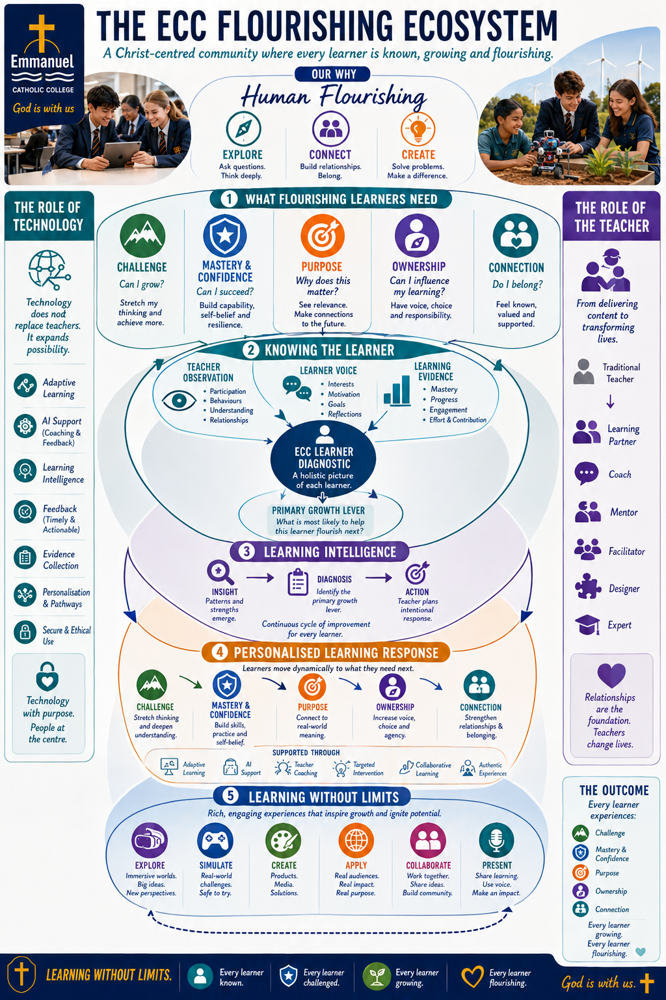
Drill down: human flourishing
This screen makes the case for change: Year 8 engagement often falls when learning feels less relevant, less relational and less connected to agency.
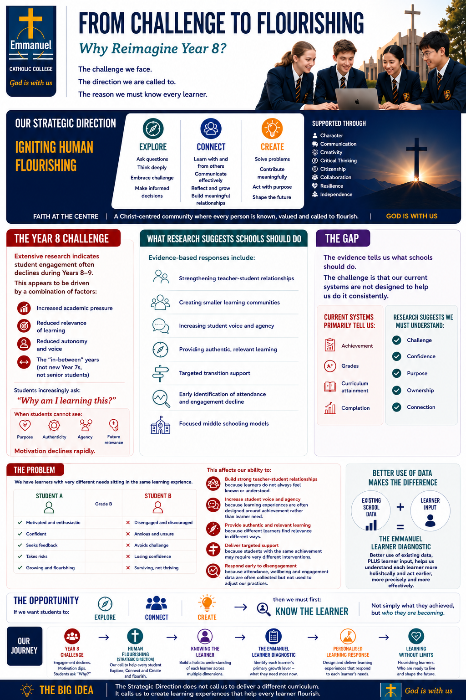
Academic pressure, reduced autonomy, lower relevance and the "in-between" nature of Year 8 can combine into disengagement.
The recurring moves are smaller learning communities, stronger teacher-student relationships, student voice, authentic learning and early identification.
Grades, attendance and completion tell us what has happened. The diagnostic needs to help teachers decide what should happen next.
Drill down: knowing the learner
Achievement alone is not enough. Two students can share the same result and need very different support.
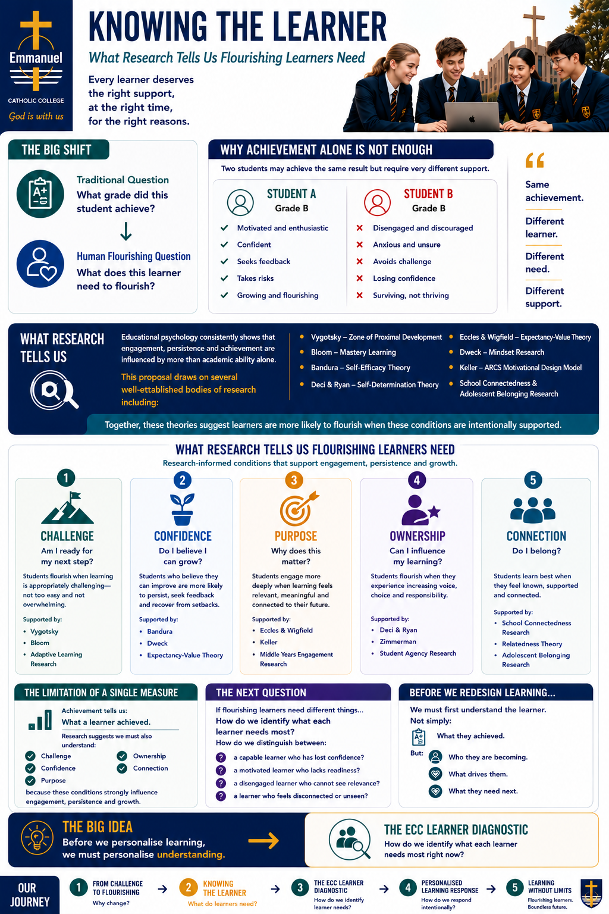
Drill down: diagnostic model
The diagnostic connects existing data, learner voice, teacher insight and wellbeing information into a whole learner profile.
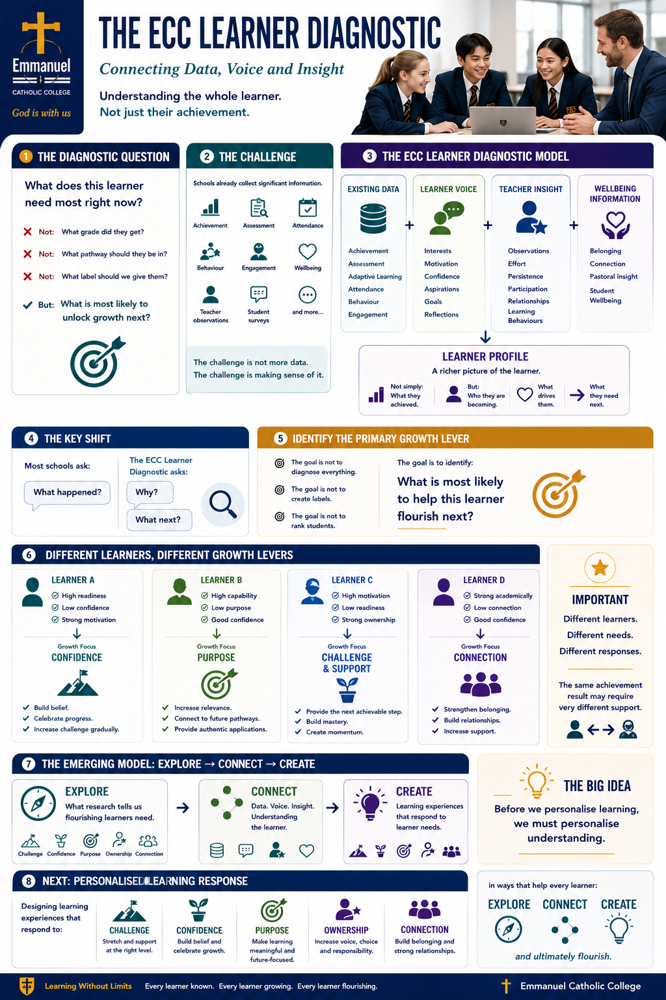
The aim is not to rank students or create fixed labels. It is to identify the primary growth lever for action.
These attributes are collected across every subject and Pastoral Care, making them a strong diagnostic signal for consistency, context-specific dips and whole-learner patterns.
Drill down: learning intelligence
This screen reframes information as decision support: who needs what, when and why?
Learning intelligence uses observation, learner voice and learning evidence to identify the next best action for growth.
Teacher observations, what learners tell us and what learning experiences reveal need to be read together.
The signals help teachers ask whether the learner is stretched, supported, motivated, agentic and known.
The dashboard should make this cycle visible enough for teachers to respond earlier and more consistently.
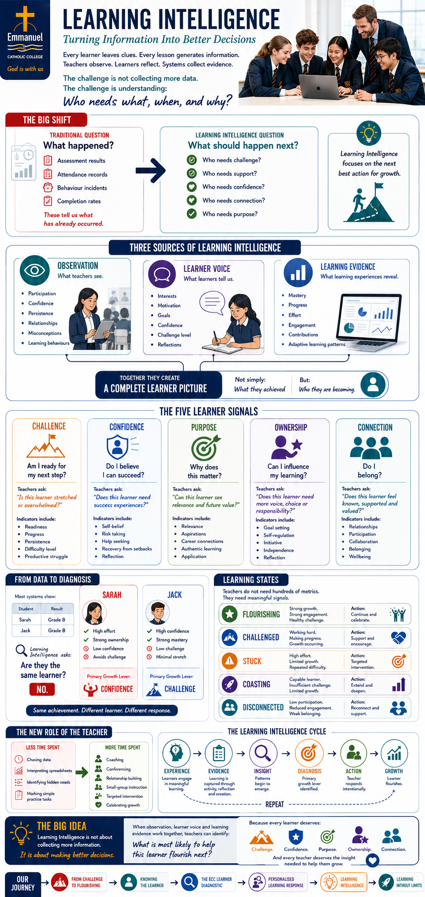
Drill down: personalised learning response
The response changes the learning experience, support, context and classroom culture while keeping expectations high.
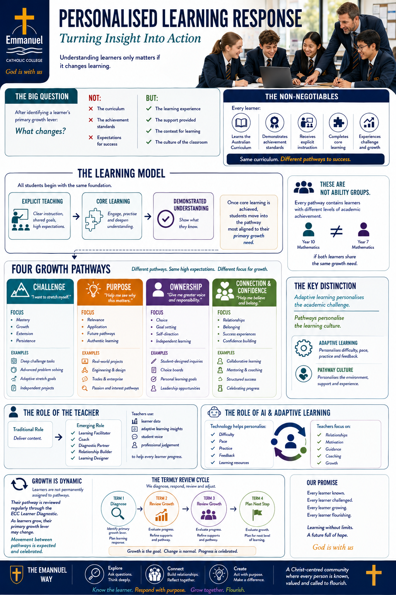
The personalised response should select or design the learning experience because it meets the diagnosed need, not because the learner has been placed in a fixed category.
A student-facing AI scaffold that turns an uploaded task into calm, sequential, achievable steps.
Subset: teacher-created examples
These are not separate pillars. They are examples of how teacher-created tools, routines and learning worlds can generate diagnostic evidence, shape personalised responses and point toward Learning Without Limits.
A 10-week interdisciplinary Year 8 project where students help design humanity's first sustainable home on the Moon. It combines common core learning with specialist pathways, public exhibition and meaningful student choice.
A custom GPT that helps students receiving learning support break curriculum tasks into clear, kind, step-by-step actions. It reduces cognitive load by simplifying language, asking one question at a time and providing sentence starters, hints or visuals when needed.
A careers and employability LMS/game ecosystem where student decisions, task time, written evidence, glossary gaps, retry patterns and capability evidence become teacher-visible diagnostic signals.
My Steps is best used when the barrier is not capability, but access: the student cannot see how to begin, hold the whole task in mind, or translate the task sheet into a first action.
Illustration of practice: learner needs in action
A teacher-created project model showing how one learning world can support different learner needs while holding the same high expectations.
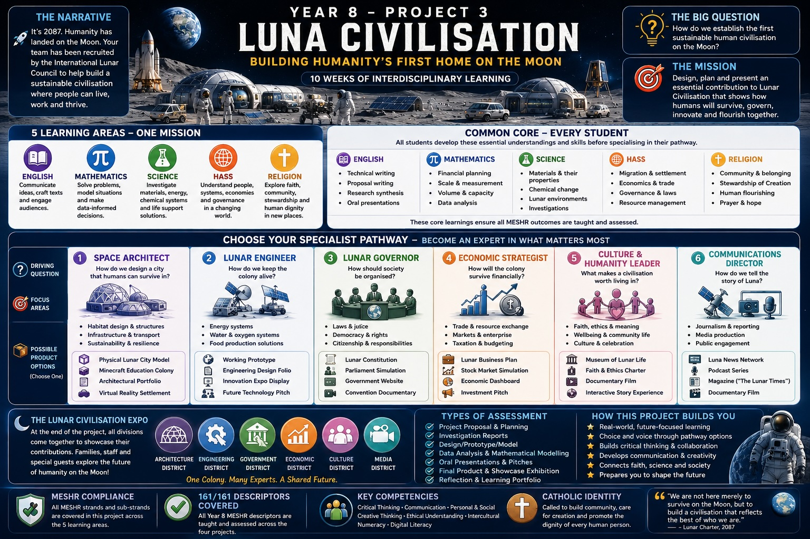
Luna Civilisation is not just a project theme. It is a designed learning environment that can meet different learner needs while keeping the same high expectations.
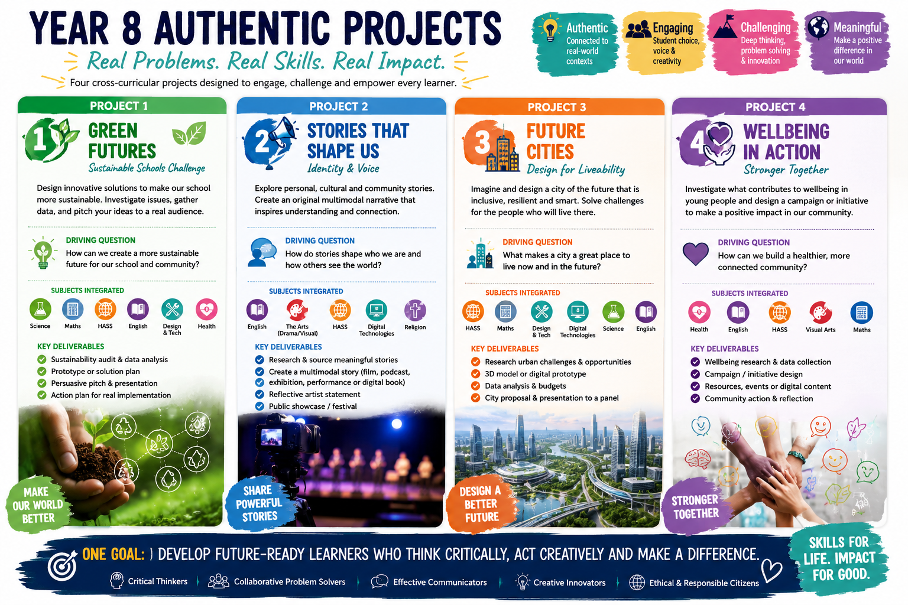
Illustration of practice: diagnostic evidence stream
A game-based LMS showing how a future-facing learning experience can generate teacher dashboard metrics, class patterns and learner-level evidence for the ECC diagnostic.
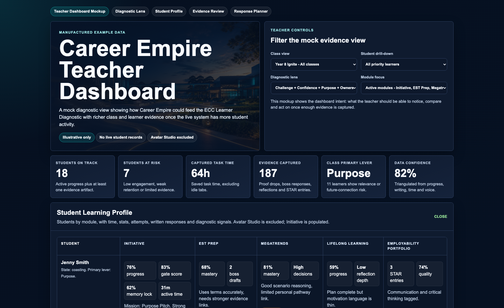
Career Empire is not the diagnostic itself. It feeds the diagnostic with richer learning evidence than completion data alone can provide.
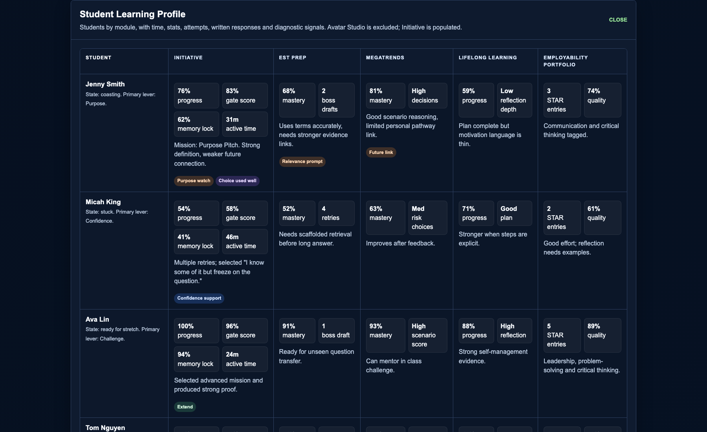
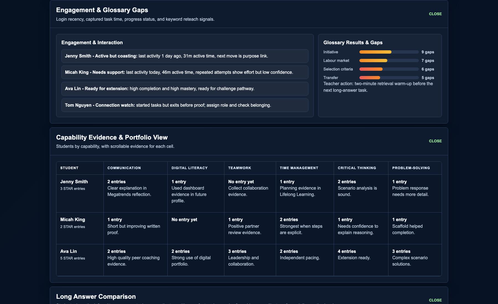
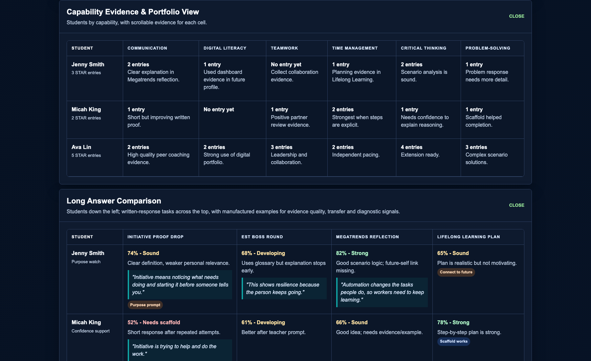
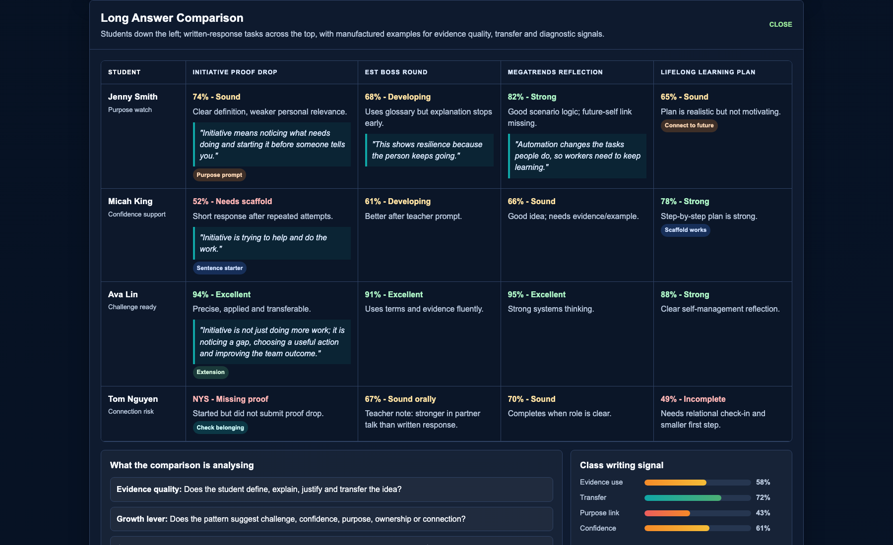
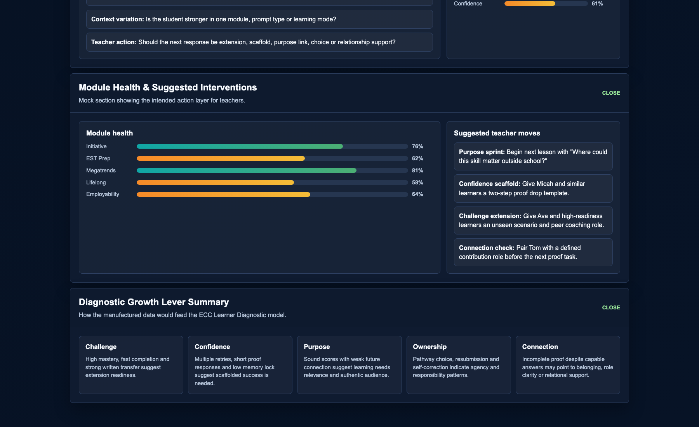
Destination page
The future learning experience: many pathways, many experiences, many ways to demonstrate learning, with the same high expectations.
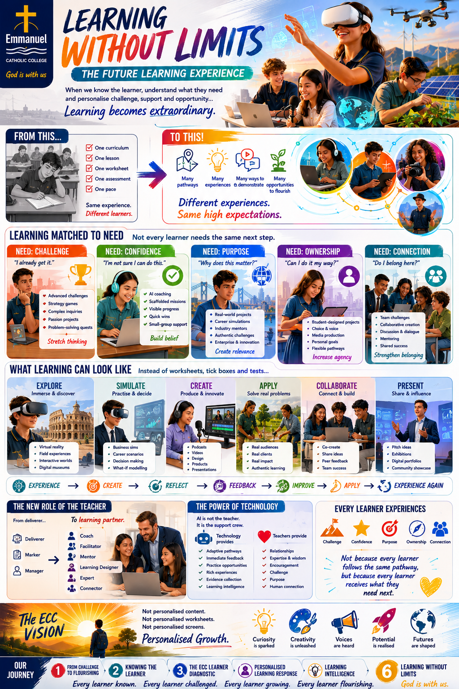
Helps students enter complex learning experiences by reducing cognitive load, clarifying the next step and giving scaffolded support without lowering the standard.
Shows how an authentic project can stretch challenge, build confidence through milestones, create purpose, increase ownership through pathways and strengthen connection through a shared mission.
Use a shared authentic problem with student choice of product, audience and pathway. Track purpose, ownership and connection for three weeks.
Jenny is maintaining grades across most subjects, but learner voice and teacher notes suggest the work is feeling less meaningful.
Low relevance score and reflections show limited future connection.
2.1 / 5Engagement drops during abstract tasks, improves when audience is clear.
Context-specificGrades remain sound, but contributions and voluntary extension have declined.
Hidden riskTeacher-assessed ratings show whether learner behaviours are consistent across subjects or context-specific.
Core signalNo acute concern, but belonging is protective and should be maintained.
StableJenny appears capable and connected enough to keep performing, but the purpose signal is weakening. The best response is likely to increase relevance, authentic application and student choice before achievement declines.
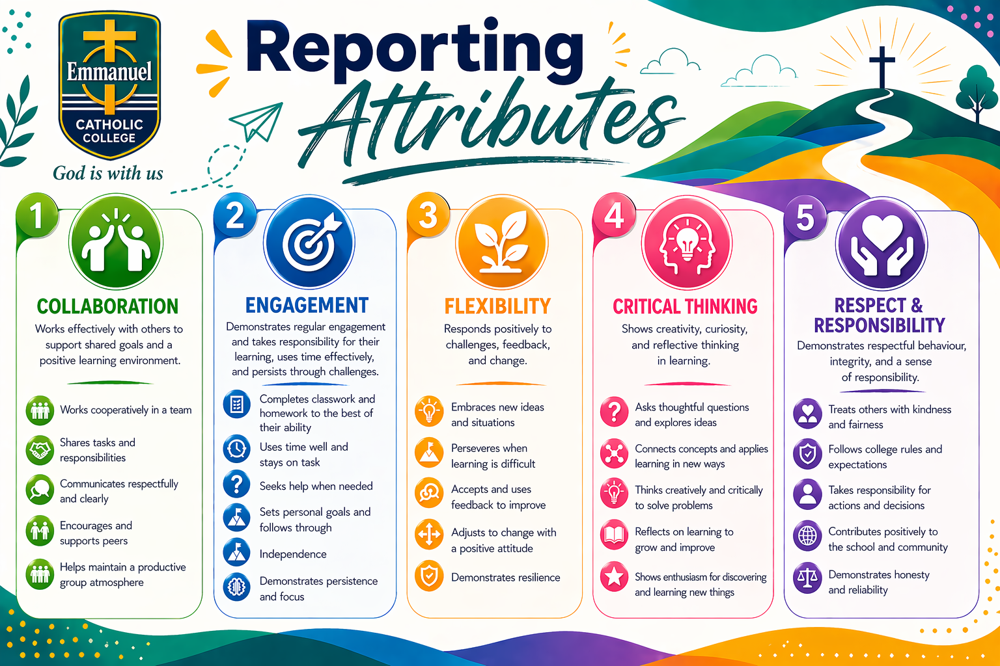
Key: G = Good, S = Satisfactory, N/A = Needs Attention. The diagnostic looks for pattern and variation, not a single attribute score.
Because attributes are teacher assessed, the descriptors matter. They help the diagnostic interpret whether a learner is showing Excellent, Good, Satisfactory or Needs Attention behaviours across subjects.
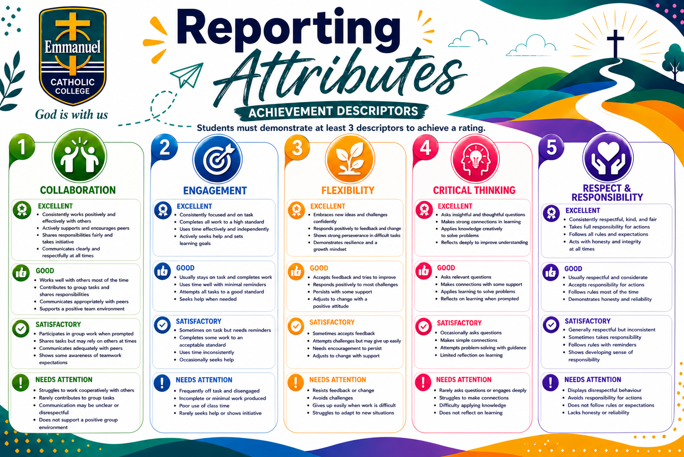
Goal: increase relevance and future connection while preserving challenge.
Use when Jenny needs help converting a task sheet into a first action, a sentence starter or a visual prompt without lowering expectations.
Use when the response needs a purpose-rich project world: choice of expert role, real design challenge, team contribution and public exhibition.
Use when the response needs clearer learning intelligence: task time, decisions, written proof, glossary gaps and capability evidence that reveal why a learner may need a different next step.
For Jenny's Purpose lever, the strongest next experience is likely to combine Apply, Create and Present: a real problem, a meaningful product and an authentic audience.